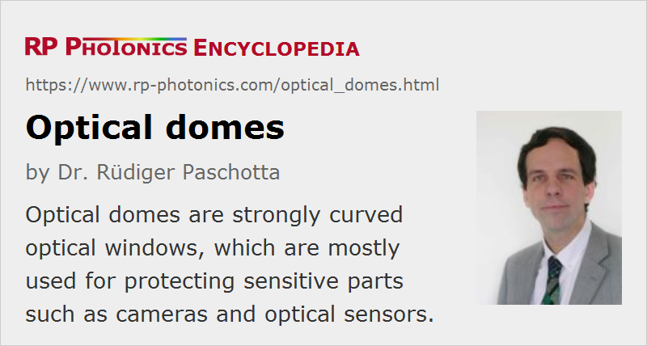

Optical Domes
Definition: strongly curved optical windows
German: optische Kuppeln, Glaskuppeln
How to cite the article; suggest additional literature
Author: Dr. Rüdiger Paschotta
Optical domes are a special kind of optical windows, which are strongly curved. For example, they can have the shape of a half-sphere, but domes with custom shapes are also available. Different sizes are available, sometimes with diameters well above 100 mm.
Same optical domes need to transmit only visible light, for example for use with camera systems. They may be made of same high-quality optical glass like BK7 or fused silica. Glass domes are also available for the ultraviolet range, e.g. with UV-grade fused silica. For some applications, plastic optics (e.g. acrylic domes) are appropriate.
Other domes are operated in the infrared (→ infrared optics); for example, such devices are applied in heat-seeking missiles. A particularly robust infrared material is sapphire. Other possible choices, partly allowing for much longer wavelengths, are zinc selenide, germanium, silicon and certain ceramics.
A wide range of viewing directions is often important. The design of a half-sphere with the detector at its center may then be particularly appropriate, because all light getting to these settings are will then have appropriately normal incidence on the dome surface. Under such conditions, there is no beam deflection, and anti-reflection coatings can reach a higher performance than for wide angular ranges.
Protective Domes
Optical domes are mostly used for protecting sensitive systems. For example, optical sensors for LIDAR built into airplanes must be protected with quite robust domes, withstanding the impact of sand or even birds at high velocities. Similarly, domes for submarines and underwater camera and video systems must withstand high pressures.
Due to the priority of protective features, some compromises must be made concerning optical performance. The sometimes harsh operating conditions may anyway not make it possible to preserve a very high optical quality of the exterior surface.
For maximum robustness, some optical domes are equipped with diamond-like hard carbon coatings. There are also other coatings for optical domes, e.g. anti-reflection coatings with particularly high durability, infrared filter coatings and metalized coatings.
Some domes have special mechanical features for precise mounting and sealing.
Suppliers
The RP Photonics Buyer's Guide contains 11 suppliers for optical domes. Among them:
Questions and Comments from Users
Here you can submit questions and comments. As far as they get accepted by the author, they will appear above this paragraph together with the author’s answer. The author will decide on acceptance based on certain criteria. Essentially, the issue must be of sufficiently broad interest.
Please do not enter personal data here; we would otherwise delete it soon. (See also our privacy declaration.) If you wish to receive personal feedback or consultancy from the author, please contact him e.g. via e-mail.
By submitting the information, you give your consent to the potential publication of your inputs on our website according to our rules. (If you later retract your consent, we will delete those inputs.) As your inputs are first reviewed by the author, they may be published with some delay.
See also: optical windows, infrared optics
and other articles in the category general optics
|  |
If you like this page, please share the link with your friends and colleagues, e.g. via social media:
These sharing buttons are implemented in a privacy-friendly way!